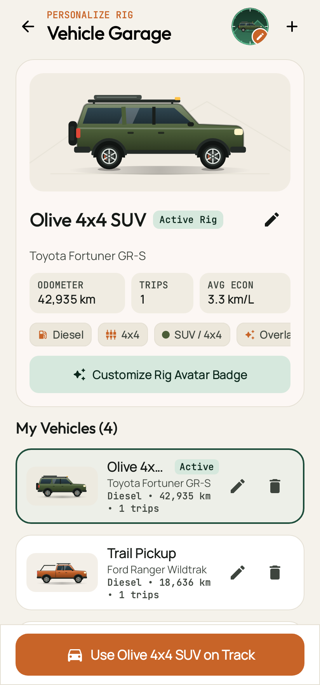
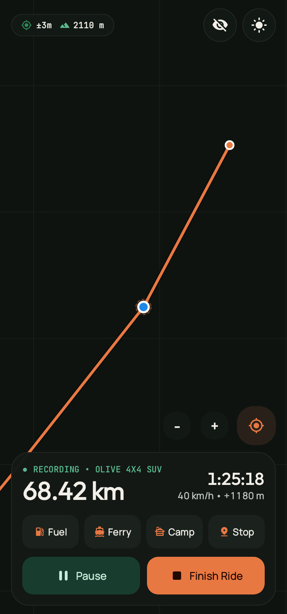
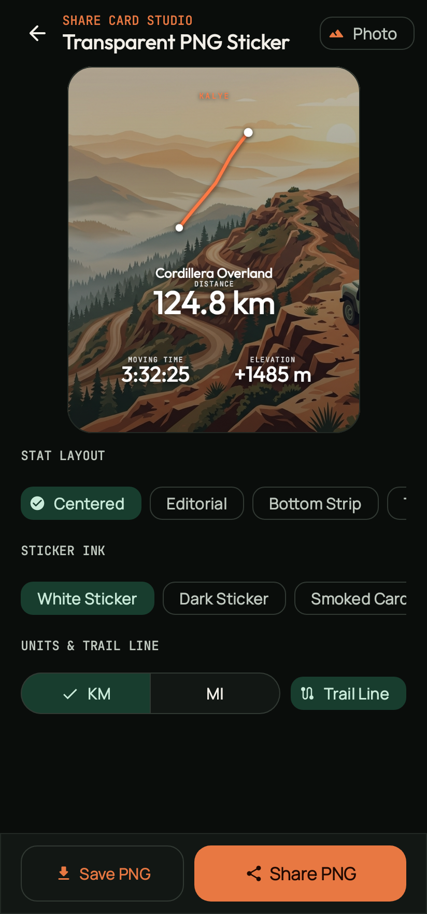

Minimal Muted Street Maps
Clean vector-styled street tiles with zero API key setup, zero traffic clutter, and instant Offline-Only toggle with sector caching.
Kalye is a minimal, zero-clutter GPS expedition tracker built for 4x4 rigs, pickups, daily cruisers, and adventure motorcycles. Record elevation-accurate routes alongside Google Maps or Android Auto, log fuel and ferry stops, and export transparent Strava-style PNG stickers—even miles beyond cell service.



Switch views to inspect every screen—or click any screenshot to zoom in full detail.
Designed to run cleanly alongside Google Maps or Android Auto without clutter. Features an isolated 1-second moving timer, 25-second stationary traffic auto-pause, OLED Stealth Battery-Saver view, and one-tap Fuel, Ferry, Camp, and Stop-Over logging.
Offline SQLite persistence at the core, plus optional Google Sign-In Cloud Sync and built-in GitHub release scanning.
Clean vector-styled street tiles with zero API key setup, zero traffic clutter, and instant Offline-Only toggle with sector caching.
Combines Android geoid MSL altitude with device pressure sensor deltas and hysteresis filtering so mountain climb totals stay honest.
Pauses moving time automatically after 25 seconds stationary in traffic or toll queues and resumes smoothly when wheels turn again.
Log liters filled, cost per liter, Ro-Ro ferry tickets, and camp fees on the road. Computes real km/L (or mpg) and cost per distance.
Export Strava-style alpha PNG overlays with moving time, distance, elevation, trip title, and route trail saved with unique timestamp filenames.
Share GPX tracks and CSV spreadsheets anytime, switch to pitch-black OLED Stealth HUD on night drives, and check GitHub APK updates in-app.
Start clean with zero preloaded cars—set up your own rigs from scratch, customize paint swatches (including Pearl White, Olive, Terracotta, Sand Dune, and Basalt), track starting odometer mileage, and filter your entire Ride History by vehicle.
Turn your favorite rig with Expedition rack or Rally trim into a custom compass-ring explorer badge with alpine, desert, coastal, or ridge backdrops.